| ・平成23年度修士論文審査会 (H24.02.20) | |||
去年は3人審査でしたが、今年はS浦くん1人。人が集まるのか心配な初めのセッション、9時開始。まだ土曜の雪が残る寒さ。ココロは会場、カラダは布団のメンバー続出。てか、オキロ！ |
|||
|
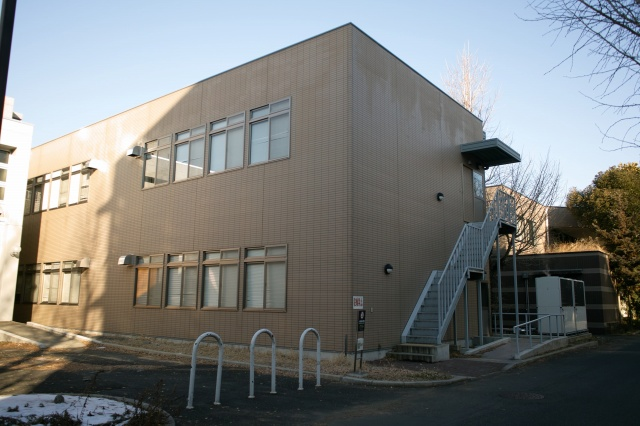
会場はこの2階 |
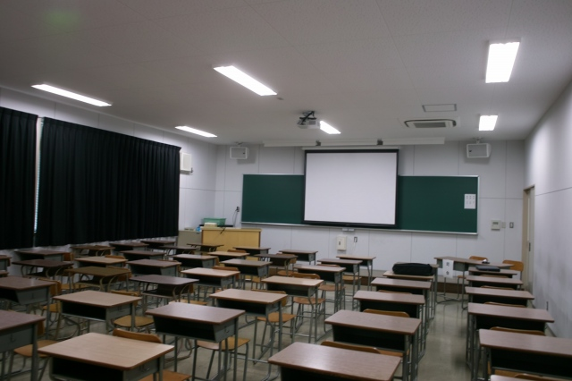
50分前、誰もいない | ||
|
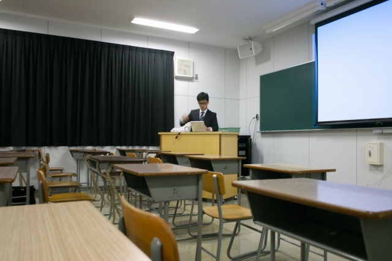
映り具合の事前確認 |
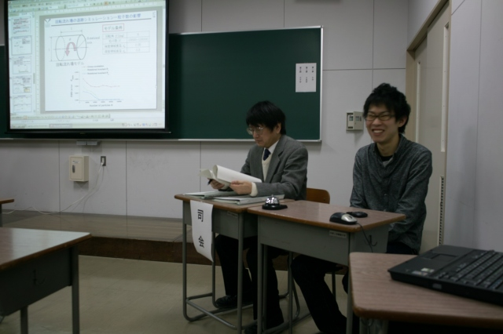
今日はCo-chairのI上くん | ||
|
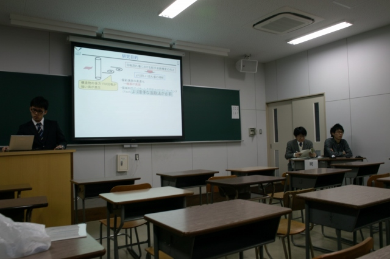
誰も来ないね |
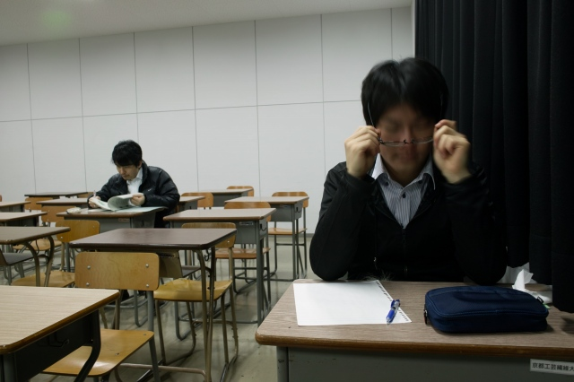
副査の北川先生と質疑記録係のF島くん | ||
|
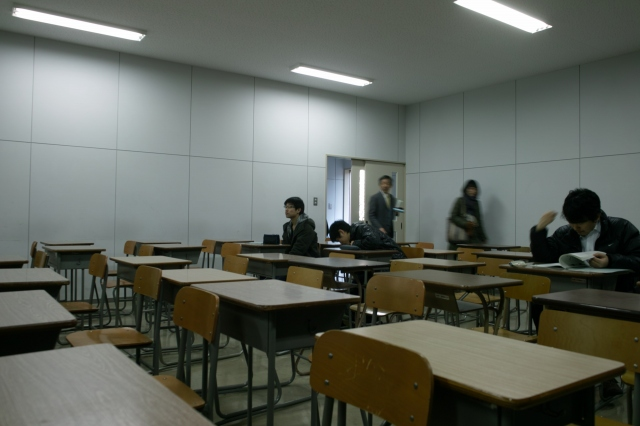
副査の森西先生、K岡さん、M下くん |
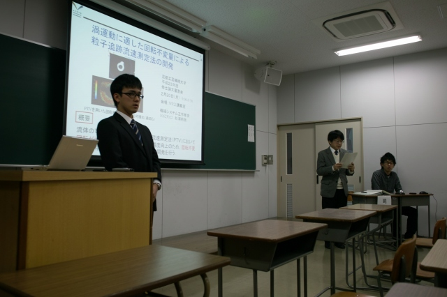
ウチってもっと居たはずだけど、開始です！ | ||
|
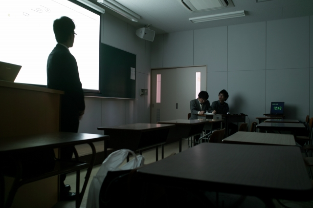
計時は今年も「座長の友」 |
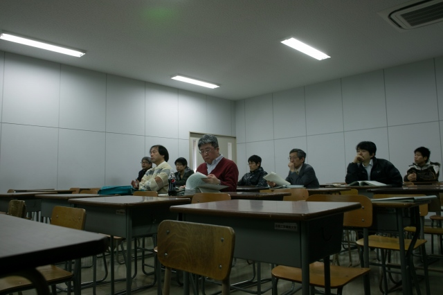
聴衆の皆さん | ||
|
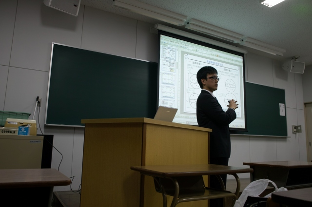
質疑応答中 |
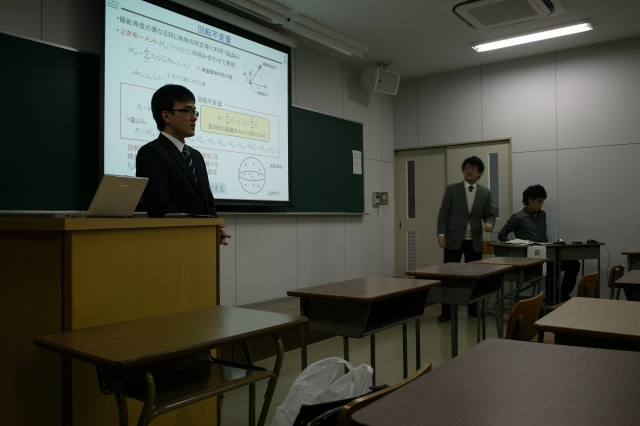
とにかく終わり | ||